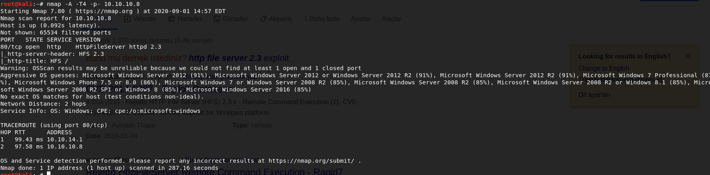

let's go to the web page.

Ok there is no default credentials for HFS. It is setting in beginning. So let's take a look at exploits about HFS


we need to do some privesc.
We can say getsystem but this won't work i tried.


on 64bit machines it's not easy to gather local exploits from the exploit suggester. It's better for a 32 bit machines. So we're gonna have to do manual post exploitation and this is somehting we haven't covered. But we've learned scripts about that on linux machines that are out there (LinEnum.sh, LinuxPrivChecker.py ) Ok how to we do that on windows machine. Simple question. Go to google and ask that.
(https://www.fuzzysecurity.com/tutorials/16.html) and this comes up and this is like bible when it comes to windows privesc.
TCM
"privilege escalation this kind of stuff isn't hyper realistic.
There's some realism when you're doing pentest but the majority of the time your privesc isn't going to fall from any of this kind of things. I doesn't mean it can't happen, it just means it's not likely. Privesc is usually on the active directory side and it's not related to most of this stuff (mentions fuzzysecurity's article) This is better for capture the flag type things you know doing the hack the box machines or any other type of lab environment like this where they demonstrate the ability to use exploits and privilege escalation."
Now there is a tool called sherlock we're gonna use that on top of that we can say to google


(https://www.exploit-db.com/exploits/39719)
also we can go to metasploit and search for this.

So as you can see OS name and OS version is very important so first things first you must look for sysinfo in meterpreter.

so let's use that.


this exploit have some problems i've tried that options set before running but it's still messed up.
this exploit is a little iffy it sometimes works sometimes not

it didn't work so we will use manual methods.
Firstly let's take a look at sherlockfrom rastamouse tool.

we've copied Sherlock.ps1 and open a file from terminal and paste into that file

now we're gonna try download this file from optimum machine.

as always we're opening a server from attacker machine.

what we're gonna do is that.


What is powershell.exe?
PowerShell is a Microsoft configuration management and task automation framework that consists of a command line shell and a related scripting language. It has been available across platforms and is currently open-source. PowerShell allows administrators to perform administrative tasks both remotely and on local Windows systems, and was first released as an integral part of Windows 7 and Windows Server 2008 R2 operating systems.
(https://www.file.net/process/powershell.exe.html)
---------------------------------------------------------
TCM
"all we're doing with sherlock is we're bypassing execution policy. Powershell.exe is just there to prevent us from running files that could be malicious it's not really anything other than a protection that we just turn off."

ok this vulnerabilites come up let's try another tool for that. Windows-exploit-suggester

for using this we need to update

we need to target's systeminfo
we're taking that and paste it sysinfo.txt


we're doing that actually


let's run it.

okey go to here (https://pypi.org/project/xlrd/#files)
download xlrd-1.2.0.tar.gz
go to /Downloads directory and type "tar xf xlrd-1.2.0.tar.gz" then go to xlrd-1.2.0 directory and type "python setup.py install"

now we can execute windows- exploit-suggester

and we're getting these vulnerabilities.
let's take MS16-098 vulnerability:

there is already links related to vulnerability provided from windows-exploit-suggester. Let's download this.

ok let's go to binary page of that and download from above github link
after download that we're opening python server from downloads directory for the sake of simplicity


we downloaded to target machine.

but this is not worked because we actually took the placeholder of the file.
because our main machine perceive the file as a malware and didn't download we need to go to here and say open i've already done it.


and we're done here.